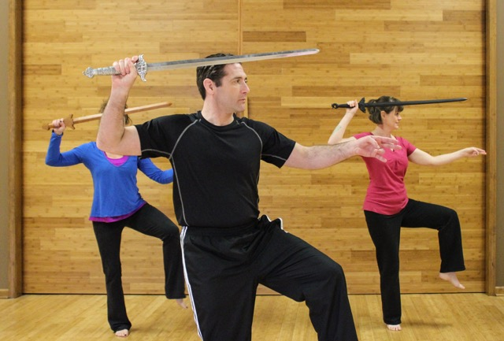

Tai Chi Ch'uan.
Tai Chi Ch'uan is a Chinese martial art that is more commonly thought of as a health and stress-relief exercise. To be sure, Tai Chi is like chi-gong and offers many health benefits (both in the Asian and Western paradigms of medicine
and the body). Its slow, graceful yet purposeful movements provide circulation without taxing the heart, making it a favorite exercise in cardiac rehab and among the elderly. It has also been shown to improve balance, strength, and even
combat osteoporosis (again, most commonly among the elderly). There are even accounts of more serious afflictions being cured by Tai Chi practice, although these are certainly less scientifically documented. Perhaps equally important is
the mental benefit. The slow movements of Tai Chi are commonly referred to as "moving meditation," and many practitioners find it a wonderful source of relaxation and stress relief.

The health and wellness movement has done a great deal to promote these benefits of Tai Chi, but unfortunately this is commonly the only aspect that is taught (or for that matter,
understood). Tai Chi Ch'uan, or Grand Ultimate Fist, is a highly sophisticated martial art, and GMA feels it would be remiss if it did not also teach the martial component. Tai Chi fighting theory can best be summarized by the phrase "maximum
effect with minimal effort" Tai Chi is represented by the yin-yang symbol, which describes its approach. If someone attacks with force (hardness) you neutralize it with suppleness (softness). One does not try to oppose incoming forces
but rather negates them, letting the opponent over-commit to the attack, and then takes advantage of the opponent's instability. This requires a fine degree of listening-feeling or reading the intentions and force vectors of the opponent-so
one can respond accordingly. Such attuned sensitivity requires a high degree of relaxation. Tai Chi is also concerned with proper architecture, or body alignment. A finer sense of force vectors and body alignment ensures that each technique
has no wasted or dispersed energy. Thus, neutralizing the opponent and proper mechanics allows the defender to remain relaxed yet still be effectiv...maximum effect with minimal effort. Training consists primarily of forms practice, done
slowly to get a feel for tai chi mechanics and relaxation, and the study of form applications. Push hands is a drill/game that teaches the student how to relax, listen, neutralize, and counter the incoming attack of a partner. It is a
form of sparring for Tai Chi, where the objective is to offbalance or push your partner away. Boxing mechanics, free style boxing, sword form, and sword play can also be studied, all of which still utilize fundamental Tai Chi mechanics
and strategies.

While Tai Chi can be an awesome martial art in theory, it takes a long time to develop, and most people interested in self defense would get a more immediate return on investment in another martial art. Since Tai Chi fighting theory
is extremely sophisticated and detailed, it is often appealing (but not limited) to professionals and academics. But anyone interested in relaxation and stress relief, health benefits, or the challenge of learning a refined method of movement
and fighting style can benefit from Tai Chi Ch'uan.
Our Tai Chi program is affiliated with New School Tai Chi Ch'uan (based on William CC Chen)